Functionality
Frontend
For the frontend part we aspired to get a clean, fully responsive interface to provide the user with an experience as close to flawless as possible.
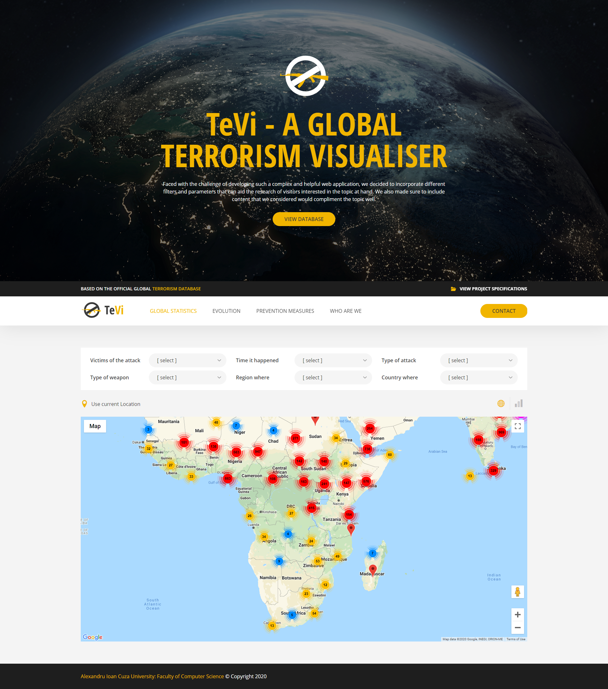 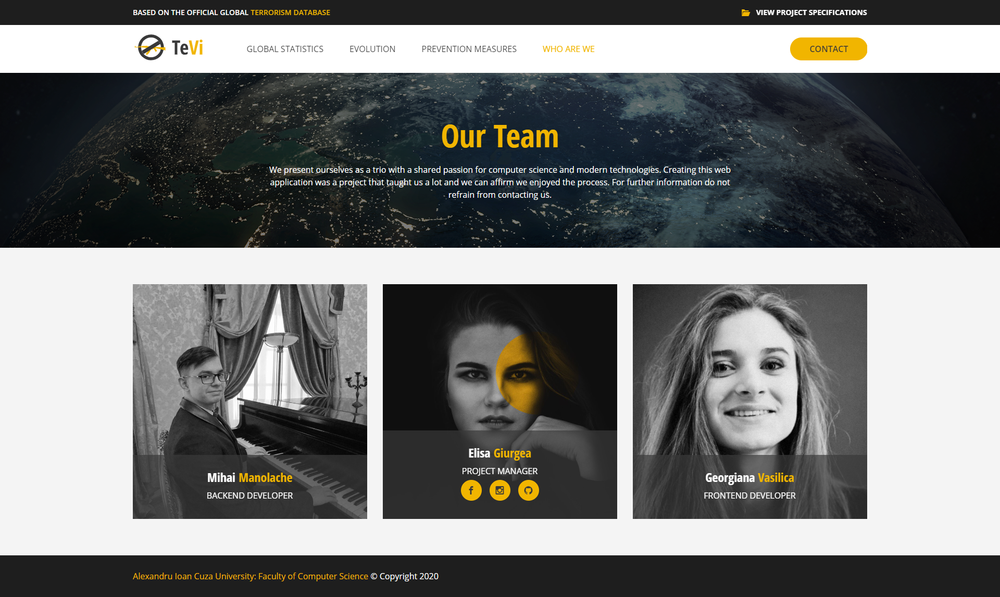
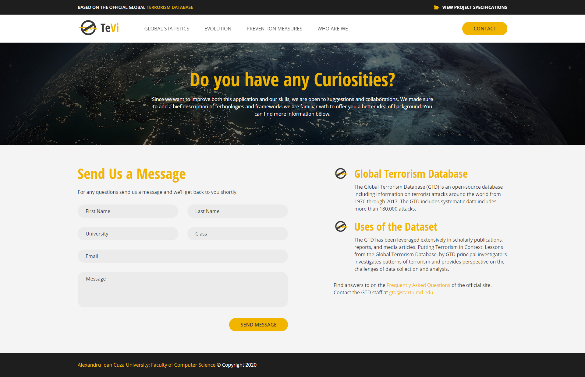
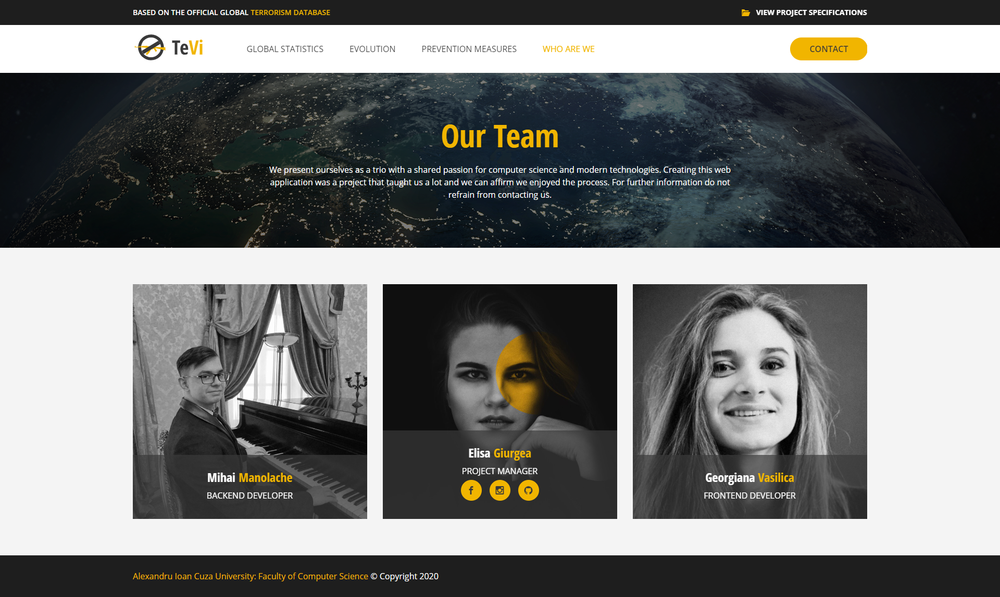
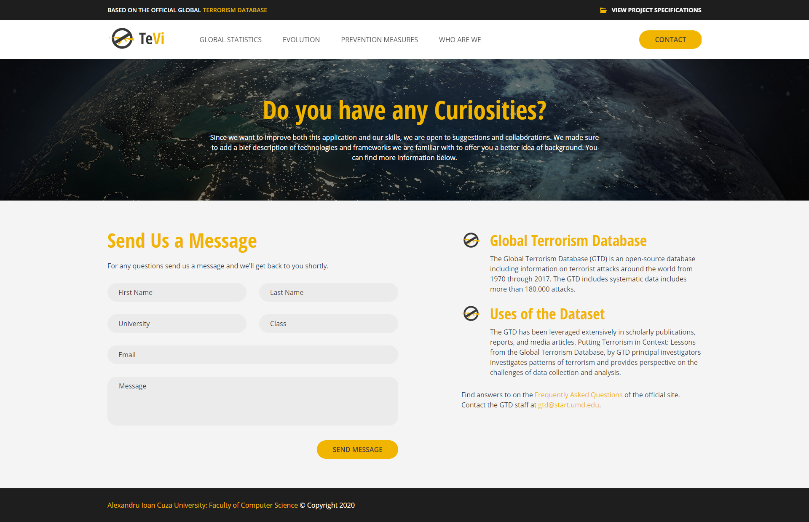
Based on the PSDs, we created an intuitive markup for each page:
which was later stylized using SCSS, which is a combination between JS and CSS which facilitates using variables, functions and mixins to ease and standardize the work behind.The responsive part was inspired by the Bootstrap system of columns, but implemented by us in a simplified form. We chose to go with this method to standardize the way the pages act on different resolutions easier.
Apart from the columns system, we deemed fit to implement a collapsed menu on responsive as the classic top navigation bar doesn't look mobile friendly and it is far easier to navigate the site on your phone when you have this type of menu.
In addition, we treated several breaking points to make the content look optimal for the user. For example, the fonts and buttons might look good on a FullHD resolution, but having huge fonts on mobile is tiring and unesthetic.
Backend and Functionality
TeVi has 3 main points when it comes to backend and functionality: to filter, to locate and to provide statistics.
Filtering the attacks
The provided CSV on https://www.kaggle.com/START-UMD/gtd has 155.27 MB, 135 columns with fields specific to each of the 180.000 attacks so it seems only logical to implement a filtering system based on a few options:
- What happened to the vitims of the attack? Was it a fatal attack or not, did the perpetator commit suicide? - DYNAMIC FILTER
- In what period of time did the attack happen? - STATIC FILTER
- What was the attack related to? - DYNAMIC FILTER
- What weapon was used for the attack? - DYNAMIC FILTER
- In what region and country did it happen? - DYNAMIC FILTER
Using these advanced search filters the application returns only the attacks which fit the option chosen by user and the user will be able to see the statistics and the map only with a certain type of attacks. If none of the filters are selected the map and charts view will consist of all the attacks imported.
As we mentioned above, initially all the events are taken into consideration.
 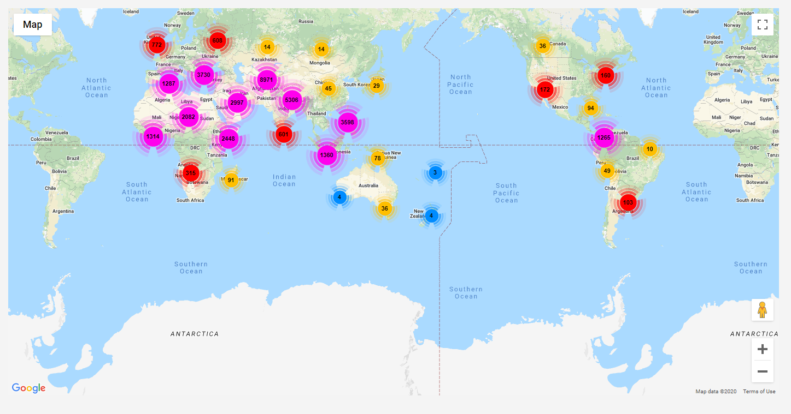
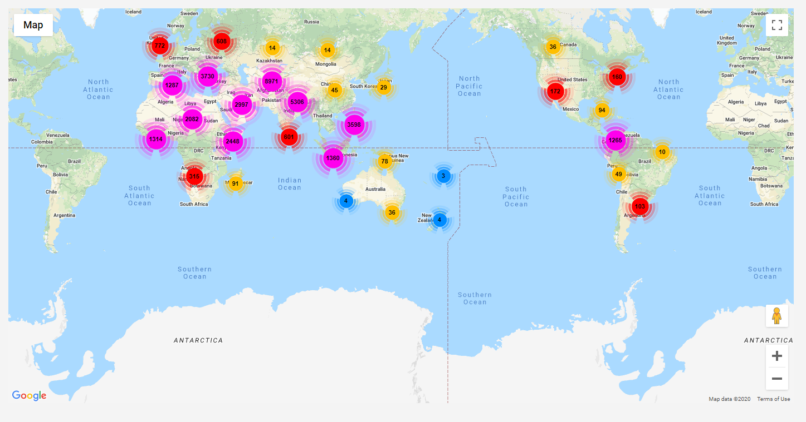
After applying some filters, only the events which fit will be displayed.
 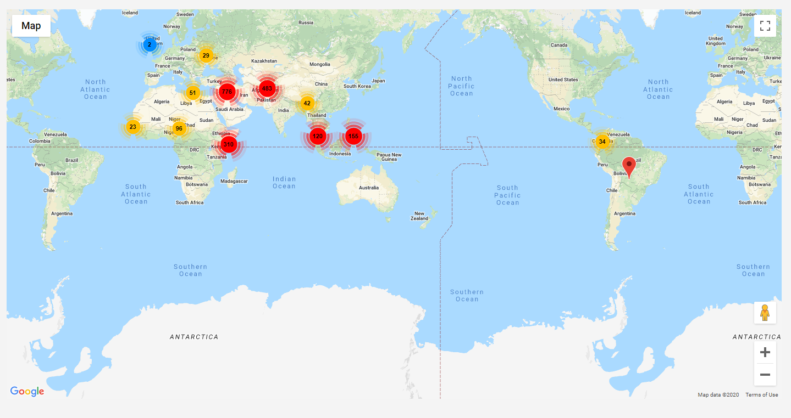
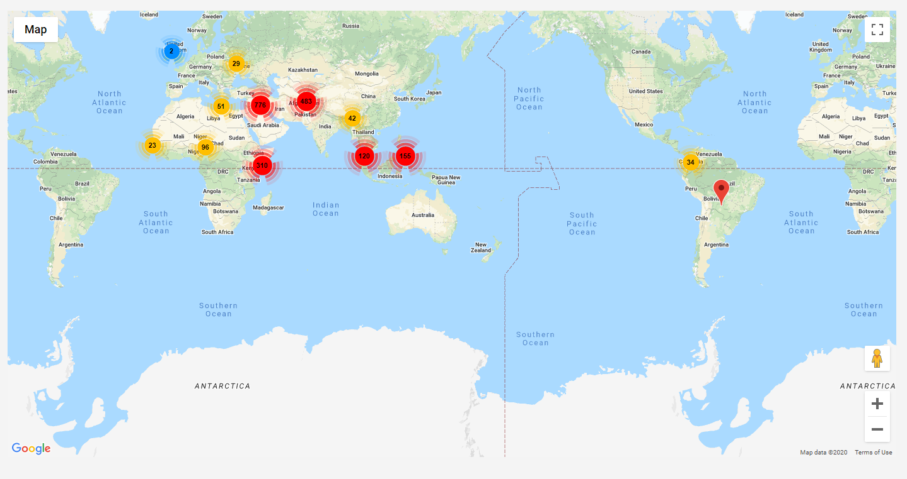
The filtering was implemented using PHP and JavaScript. The necessary field values were imported dynamically from the database using queries and they were later used to classify the events into groups which share similar values for the fields used to filter them.
Locating the attacks
Using the Google Maps API we used the map plugin to show the terrorist attacks on the map. The events shown are affected by the filters.
The attacks were "placed" on the map according to the data in the latitude and longitude fields in the CSV provided by Kaggle.
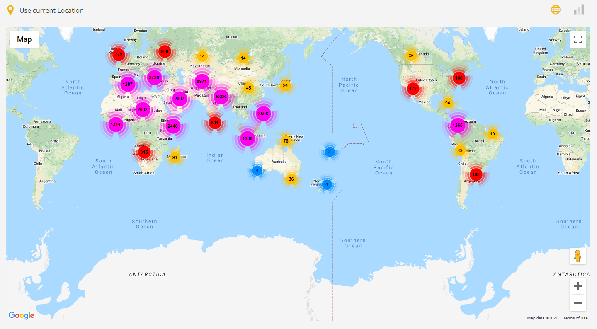The map has the usual Google Maps functionality: Regular View, Street View, zooming option, fullscreen view option, and the possibility to get the current location of the user in order to show him the closest attacks that happened. The current location only works on https, but if the user is on http he will get an alert which informs him that he should use https to use the browser location function.

Clicking on a marker on the map automatically opens up a popup with general information about the attacks which happened on the exact location.

When the user clicks on the marker, a request is sent to the server to return the values in the following fields which show the country and the city where the attack happened, the group which committed the attack, the number of deaths and wounded people, the weapon used for the attack and the summary. Also, the user has the possibility to search for more information about the weapon on Wikipedia and Google.
If more than one event happened at the same location, all the events that happened there will be shown.
In the CSV, there are several events which don't have a value in the longitude and latitude fields and instead of showing them on the map at the (0,0) coordinates, they are removed from the map.
Providing Statistics
The statistics for the terrorist attacks were created using ChartJs, a free open source library for data visualization, which supports several chart types.
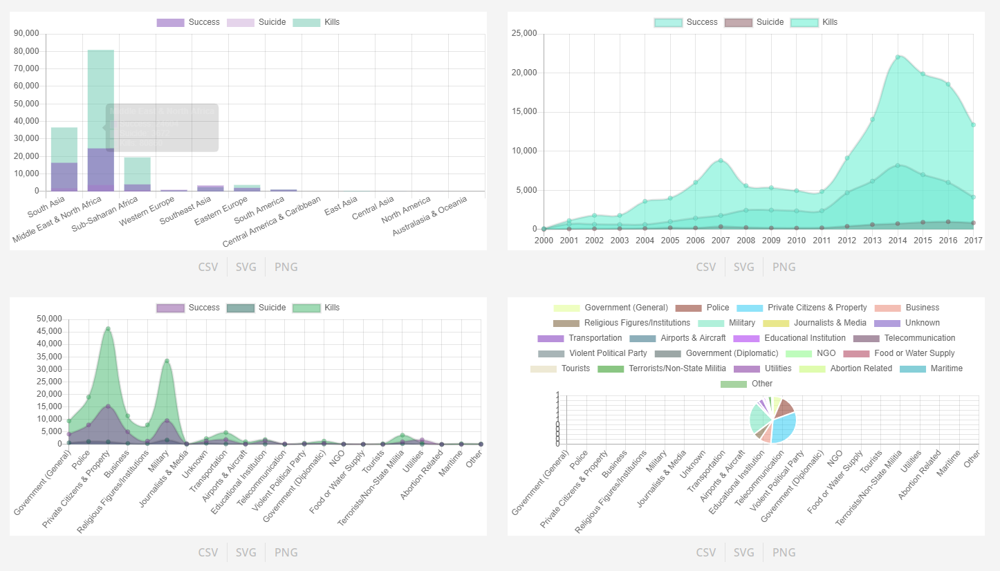To showcase the variations we chose to use 4 different charts based on different fields which are relevant to showcasing data related to terrorism.
- 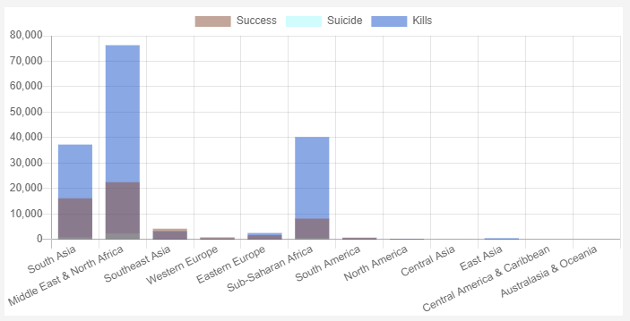 The chart showcasing terrorism by regions has the number of victims on the Y axis and the regions on the X axis. The fields used for this stacked bar chart are nkill, nwound, region and region_txt.
- 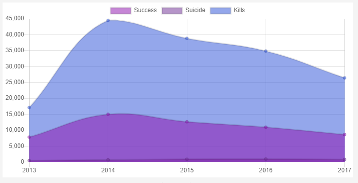 The chart showcasing the terrorist incidents which happened in a certain period of time has the number of victims on the Y axis and the years on the X axis. The fields used for this line chart are nkill, nwound and iyear.
- 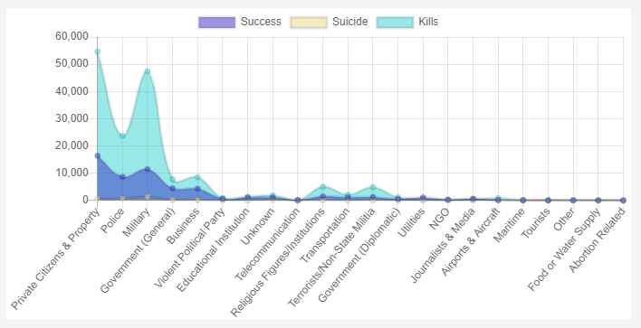 The chart showcasing the most attacked targets has the number of victims on the Y axis and the targerts on the X axis. The fields used for this line chart are nkill, nwound, targtype1_txt and targtype1.
- 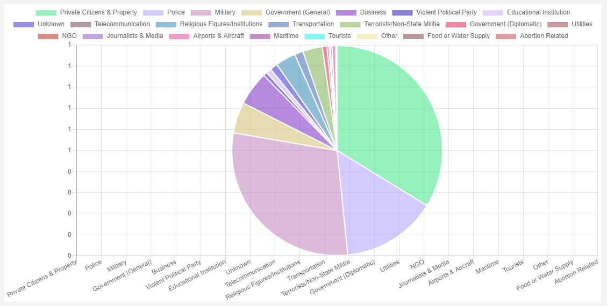 The chart showcasing the attack types has the attacks shown in percentages according to the number of victims. The fields used for this pie chart are nkill, nwound, attacktype1 and attacktype1_txt.
Similarly to the map, the data for the charts is affected by the filters in order to show the varying statistics in different situations where terrorism happened.
Exporting Statistics
For each chart the user can export in 3 different formats: the normal graphs in PNG or SVG format (because of the big number of values in ceratin fields, which caused the text to intercalate we gave the SVG a bigger height) or a CSV with the fields and the values used for the chart.


When the user clicks on a button to download a chart, a request is sent to the server to do it.